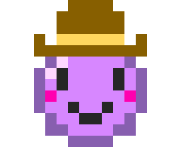
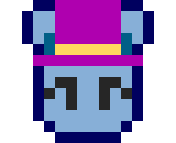
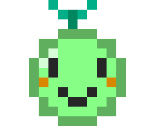
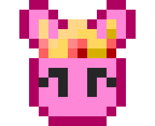
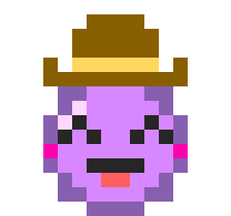
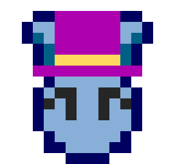
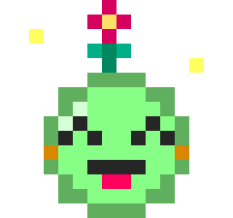
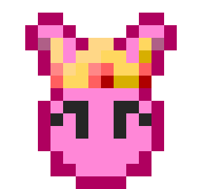

um lugar quieto para focar junto
Quanto do seu dia foi foco de verdade?
shark tank · Poli/UFRJ · 27/11/2026
01 / o problema
Faltava um lugar de foco feito para quem programa.
Gloria Mark, UC Irvine (Attention Span, 2023) · Microsoft Work Trend Index 2023 (31 mil pessoas) · YouTube Culture & Trends (2024)
02 / a solução
~ $ ssh sshiu
"fechar a issue #106", com o tempo que você acha que leva.
Todo mundo vê quem está focando e em quê. Sem chat, só reações.
Focou, ele fica radiante. Sumiu por dias, ele murcha.
Nada para instalar: quem programa já tem ssh.
03 / na prática
app real · 40 sColoque demo.mp4 na pasta deste arquivo, ou arraste o vídeo para cá.
04 / alternativas
| Hoje se usa | Onde | Com quem | Como cobra |
|---|---|---|---|
| Forest48 mi de downloads | celular | sozinho | app + compras |
| Focusmate | navegador, com câmera | um desconhecido | US$ 8–12/mês · times US$ 50+ |
| Discord de estudo1 mi de membros | Discord, com chat | multidão | grátis |
| sshiu | terminal, sem câmera | a sua turma ou time | skins · plano · empresas |
AppBrain (2026) · focusmate.com/business (2026) · Discord, 25/11/2026 · GitHub Octoverse 2026: 10,2 mi de devs no Brasil
05 / modelo de negócio
Personagens, cores e chapéus pagos. As moedas continuam vindo do foco: dinheiro nunca compra foco nem energia.
R$ 4,90–14,90por item ou pacoteGrátis: sala, pet e jardim. O plano abre salas maiores, histórico completo, mais wallpapers e exportar o foco em CSV.
R$ 9,90/mêspor pessoaUm espaço privado com administrador. Próximo passo: a issue do GitHub vira a tarefa, e fechar a issue marca o foco como feito.
R$ 15/assento/mêsparceria por empresaPreços e cenários são hipóteses, ancorados no Focusmate (US$ 8–12/mês) e no Finch Plus (US$ 5,99–9,99/mês). Conta em pitch/revenue-assumptions.md.
06 / onde estamos
Salas, pet, loja, modo jardim e estatísticas.
Servidor público e piloto com turmas da Poli.
Login pela chave do GitHub e issues como tarefas.
Sala do time, por assento.
O app já existe. Falta pôr no ar.
Repositório sshiu, commit b590406, medido em 25/11/2026.
o pedido
[R$ 100 mil] por [10%]
12 meses para pôr o ssh sshiu no ar, pagar artistas para as skins e fazer o piloto com turmas e empresas.
Foco de verdade, junto, sem sair do terminal.



